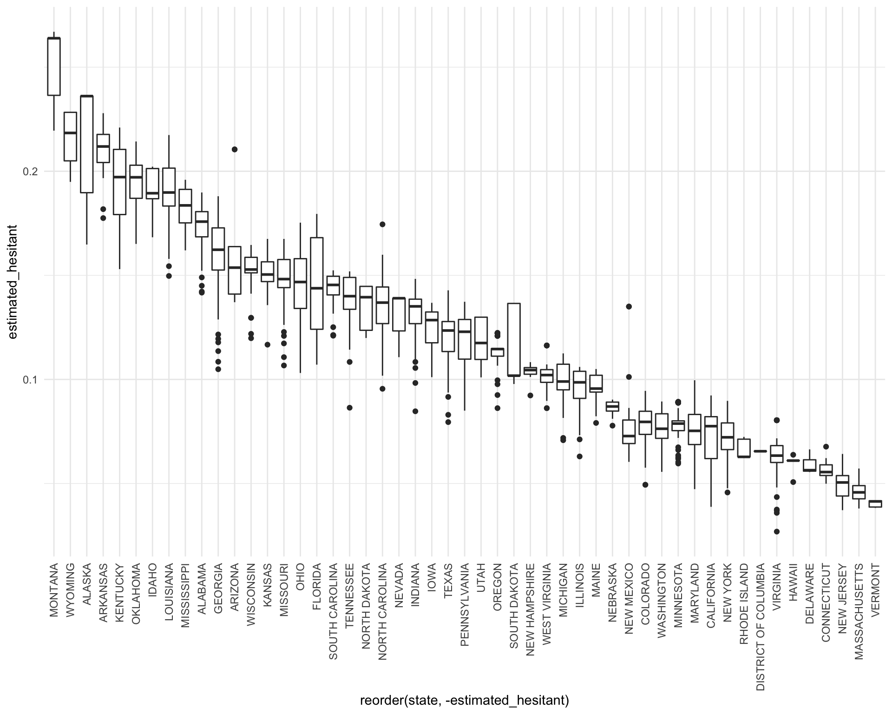
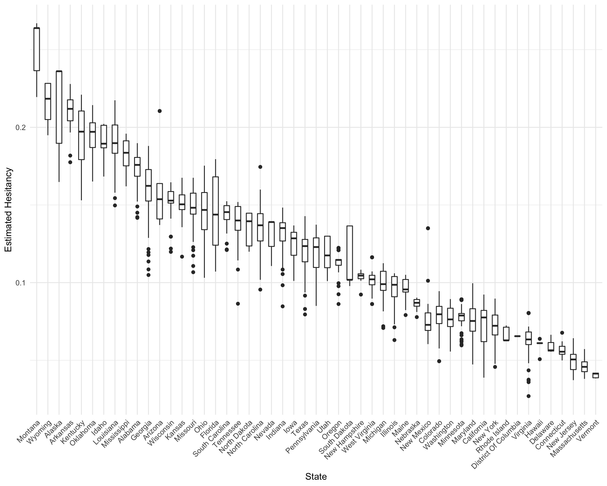

The CDC provides data on vaccine hesitancy at the state level using the U.S. Census Bureau’s Household Pulse Survey (HPS). Using this dataset provides we can describe trends in vaccine hesitancy across the United States. Results from this section can help to shed light on the important questions of what factors are associated with vaccine hesitancy, how vaccine hesitancy has affected vaccine uptake, and subsequently the trajectory of the pandemic.
Mean hesitancy by state
vaccine_hesitancy %>%
group_by(state) %>%
mutate(state = str_to_title(state)) %>%
rename(State = state) %>%
summarize(
Hesitant = mean(estimated_hesitant)
) %>% knitr::kable()| State | Hesitant |
|---|---|
| Alabama | 0.1735075 |
| Alaska | 0.2173862 |
| Arizona | 0.1592400 |
| Arkansas | 0.2121227 |
| California | 0.0722741 |
| Colorado | 0.0782203 |
| Connecticut | 0.0569875 |
| Delaware | 0.0594333 |
| District Of Columbia | 0.0655000 |
| Florida | 0.1452119 |
| Georgia | 0.1618151 |
| Hawaii | 0.0595000 |
| Idaho | 0.1920227 |
| Illinois | 0.0960853 |
| Indiana | 0.1314652 |
| Iowa | 0.1262646 |
| Kansas | 0.1516476 |
| Kentucky | 0.1958492 |
| Louisiana | 0.1897188 |
| Maine | 0.0956562 |
| Maryland | 0.0760167 |
| Massachusetts | 0.0462786 |
| Michigan | 0.0996313 |
| Minnesota | 0.0778862 |
| Mississippi | 0.1825317 |
| Missouri | 0.1502278 |
| Montana | 0.2513857 |
| Nebraska | 0.0867882 |
| Nevada | 0.1324235 |
| New Hampshire | 0.1035400 |
| New Jersey | 0.0496952 |
| New Mexico | 0.0782242 |
| New York | 0.0717855 |
| North Carolina | 0.1359130 |
| North Dakota | 0.1365208 |
| Ohio | 0.1456568 |
| Oklahoma | 0.1940455 |
| Oregon | 0.1126889 |
| Pennsylvania | 0.1188567 |
| Rhode Island | 0.0664200 |
| South Carolina | 0.1432870 |
| South Dakota | 0.1125742 |
| Tennessee | 0.1383884 |
| Texas | 0.1198110 |
| Utah | 0.1172448 |
| Vermont | 0.0402643 |
| Virginia | 0.0631105 |
| Washington | 0.0779128 |
| West Virginia | 0.1014527 |
| Wisconsin | 0.1529444 |
| Wyoming | 0.2177609 |
Boxplot of mean hesitancy (probably not taking vaccine or definiitely not)
vaccine_hesitancy %>%
ggplot(aes(x = reorder(state, -estimated_hesitant), y = estimated_hesitant)) +
geom_boxplot() +
theme(axis.text.x = element_text(angle = 90, vjust = 0.5, hjust=1))
vaccine_hesitancy %>%
mutate(state = str_to_title(state)) %>%
ggplot(aes(x = reorder(state, -estimated_hesitant), y = estimated_hesitant)) +
geom_boxplot(width = 0.5) +
xlab("State") +
ylab("Estimated Hesitancy") +
theme(axis.text.x = element_text(angle = 45, hjust=1))
Mean STRONGLY hesitancy by state
vaccine_hesitancy %>%
group_by(state) %>%
mutate(state = str_to_title(state)) %>%
rename(State = state) %>%
summarize(
Hesitant = mean(estimated_strongly_hesitant)
) %>% knitr::kable()| State | Hesitant |
|---|---|
| Alabama | 0.1324090 |
| Alaska | 0.1569069 |
| Arizona | 0.1213533 |
| Arkansas | 0.1399013 |
| California | 0.0358069 |
| Colorado | 0.0472750 |
| Connecticut | 0.0315125 |
| Delaware | 0.0348333 |
| District Of Columbia | 0.0403000 |
| Florida | 0.0972075 |
| Georgia | 0.1031195 |
| Hawaii | 0.0317400 |
| Idaho | 0.1256932 |
| Illinois | 0.0592275 |
| Indiana | 0.0826815 |
| Iowa | 0.0758818 |
| Kansas | 0.0931286 |
| Kentucky | 0.1294242 |
| Louisiana | 0.1169953 |
| Maine | 0.0785625 |
| Maryland | 0.0402542 |
| Massachusetts | 0.0336857 |
| Michigan | 0.0613145 |
| Minnesota | 0.0419644 |
| Mississippi | 0.1254244 |
| Missouri | 0.0904000 |
| Montana | 0.1708304 |
| Nebraska | 0.0535054 |
| Nevada | 0.0715235 |
| New Hampshire | 0.0679000 |
| New Jersey | 0.0337143 |
| New Mexico | 0.0417000 |
| New York | 0.0504532 |
| North Carolina | 0.1049470 |
| North Dakota | 0.0933113 |
| Ohio | 0.0879420 |
| Oklahoma | 0.1348753 |
| Oregon | 0.0850028 |
| Pennsylvania | 0.0788045 |
| Rhode Island | 0.0497600 |
| South Carolina | 0.0806370 |
| South Dakota | 0.0815485 |
| Tennessee | 0.0872611 |
| Texas | 0.0800327 |
| Utah | 0.0721724 |
| Vermont | 0.0216714 |
| Virginia | 0.0433083 |
| Washington | 0.0566590 |
| West Virginia | 0.0776200 |
| Wisconsin | 0.0911097 |
| Wyoming | 0.1587217 |
Boxplot of mean hesitancy (probably not taking vaccine or definiitely not)
vaccine_hesitancy %>%
ggplot(aes(x = reorder(state, -estimated_strongly_hesitant), y = estimated_strongly_hesitant)) +
geom_boxplot() +
theme(axis.text.x = element_text(angle = 90, vjust = 0.5, hjust=1)) vaccine_hesitancy %>%
mutate(state = str_to_title(state)) %>%
ggplot(aes(x = reorder(state, -estimated_strongly_hesitant), y = estimated_strongly_hesitant)) +
geom_boxplot(width = 0.5) +
xlab("State") +
ylab("Estimated Strongly Hesitant") +
coord_flip()Plot of vaccine hesitancy percent vs. social vulnerability index
hesitant_plot = vaccine_hesitancy %>%
ggplot(aes(x = svi_category, y = estimated_hesitant)) +
geom_boxplot() +
theme(axis.text.x = element_text(angle = 90, vjust = 0.5, hjust=1))
strongly_hesitant_plot = vaccine_hesitancy %>%
ggplot(aes(x = svi_category, y = estimated_strongly_hesitant)) +
geom_boxplot() +
theme(axis.text.x = element_text(angle = 90, vjust = 0.5, hjust=1))
hesitant_plot + strongly_hesitant_plot#below line makes it so svi labels are on different lines
levels(vaccine_hesitancy$svi_category) <- gsub(" ", "\n", levels(vaccine_hesitancy$svi_category))
hesitant_plot = vaccine_hesitancy %>%
na.omit() %>%
ggplot(aes(x = svi_category, y = estimated_hesitant)) +
geom_boxplot() +
xlab("SVI Category") +
ylab("Estimated Hesitant") +
theme(title = element_text(hjust = 0.5) ) +
ggtitle("Estimated Vaccine Hesitancy")
strongly_hesitant_plot = vaccine_hesitancy %>%
na.omit() %>%
ggplot(aes(x = svi_category, y = estimated_strongly_hesitant)) +
geom_boxplot() +
xlab("SVI Category") +
ylab("Estimated Strongly Hesitant") +
theme(title = element_text(hjust = 0.5) ) +
ggtitle("Estimated Strong Vaccine Hesitancy")
library(patchwork)
hesitant_plot + strongly_hesitant_plot Linear regression
fit = lm(estimated_hesitant ~ social_vulnerability_index_svi + percent_non_hispanic_white, data = vaccine_hesitancy)
broom::tidy(fit)## # A tibble: 3 × 5
## term estimate std.error statistic p.value
## <chr> <dbl> <dbl> <dbl> <dbl>
## 1 (Intercept) 0.0474 0.00499 9.50 4.11e-21
## 2 social_vulnerability_index_svi 0.0728 0.00339 21.5 1.99e-95
## 3 percent_non_hispanic_white 0.0640 0.00486 13.2 1.21e-38fit2 = lm(estimated_strongly_hesitant ~ social_vulnerability_index_svi + percent_non_hispanic_white, data = vaccine_hesitancy)
broom::tidy(fit2)## # A tibble: 3 × 5
## term estimate std.error statistic p.value
## <chr> <dbl> <dbl> <dbl> <dbl>
## 1 (Intercept) 0.0287 0.00354 8.09 8.48e-16
## 2 social_vulnerability_index_svi 0.0522 0.00241 21.7 3.80e-97
## 3 percent_non_hispanic_white 0.0419 0.00345 12.1 3.27e-33Adjust race variable
vaccine_hesitancy_race = vaccine_hesitancy %>%
pivot_longer(
percent_hispanic:percent_non_hispanic_white,
names_to = "race",
names_prefix = "percent_",
values_to = "race_percent")